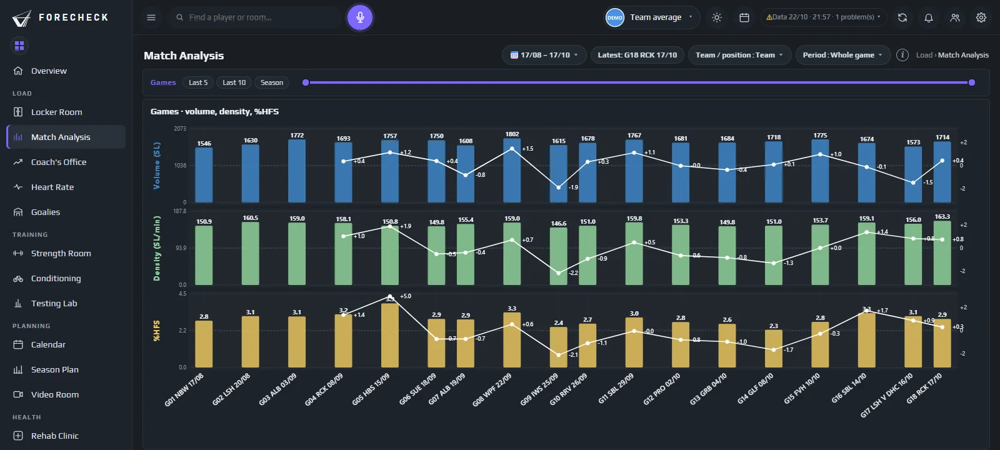

Hockey su ghiaccio · Match Analysis
Nato prima sul ghiaccio.

Carico di pattinaggio
Un volume che conta le falcate, non gli scossoni
iAltro
Il volume giornaliero conta le spinte di pattinaggio, pesate con la massa corporea del giocatore. Tiri, contatti e movimenti in panchina non lo gonfiano, e un giocatore più pesante si vede riconosciuto il lavoro che fa.
Tendenza dello Skating Load · squadra
Densità (SL/min)
Quanto era densa ogni minuto sul ghiaccio
iAltro
Mostra quanto pattinaggio è stato messo in ogni minuto in cui un giocatore ha davvero pattinato, rispetto alla sua norma.
Ultimo allenamento · intensità rispetto alla propria norma
| Densità (SL/min) | Falcate ad alta forza | Intensità (T) | |
|---|---|---|---|
| #27 F | 151 | 34 % | 63 |
| #7 D | 138 | 28 % | 47 |
| #14 F | 144 | 31 % | 52 |
| #44 D | 133 | 22 % | 38 |
Calo a fine partita
Chi cala nel terzo tempo
iAltro
Match Analysis mostra ogni tempo come percentuale del primo tempo degli stessi giocatori, per la densità e la % di falcate ad alta forza. Entrambe sono al minuto o per falcata, quindi anche un tempo con più o meno tempo sul ghiaccio si confronta in modo equo.
3° tempo · % del suo 1° tempo
- #27 F84 %La densità cala dopo il 2° intervallo
- #7 D79 %Meno falcate ad alta forza nel finale
- #19 F101 %Mantiene il pattinaggio fino alla fine
Ha giocato vs non ha giocato
Chi non ha giocato non resta indietro
iAltro
Dopo una partita, ForeCheck confronta il carico dei giocatori che non hanno giocato con quello di chi ha giocato e prepara la loro seduta post-partita. Così i giocatori esclusi e in sovrannumero mantengono la condizione invece di perdere una settimana.
Dopo la partita · ha giocato vs non ha giocato
- #14 F0:00Seduta di forza post-partita preparata
- #44 D0:00Seduta di forza post-partita preparata
Rilevamento fuori dal ghiaccio
Sul ghiaccio o fuori, riconosciuto automaticamente
iAltro
ForeCheck rileva automaticamente il lavoro sul ghiaccio e fuori dal ghiaccio, anche quando entrambi sono nella stessa registrazione, per l’analisi più precisa e dettagliata possibile secondo la letteratura più recente. Una seduta in bici dopo l’allenamento non passa mai per pattinaggio leggero, e anche le corse all’aperto vengono riconosciute.
Fuori dal ghiaccio, pettorina ancora addosso
- #19 F32′File Wattbike corrispondente · confermato automaticamente
- #5 D24′Probabilmente fuori dal ghiaccio · conferma o rifiuta
- #11 F41′Corsa all’aperto · riconosciuta dai passi
Tag giorno partita
Ogni seduta sa quanto manca alla partita
iAltro
Le sedute sono etichettate in base ai giorni alla partita, da MD-3 a MD+1. L’allenamento MD-1 di un giocatore è confrontato con i suoi altri allenamenti MD-1, mai con una partita, quindi «più duro del normale» significa davvero più duro della sua norma per quel giorno.
Settimana di partita · tag
- MonMD+1Recupero
- TueMD-3Ghiaccio + palestra
- WedMD-2Ghiaccio
- ThuMD-1Attivazione
- FriMDPartita
- SatMD+1Recupero
- Sun·Riposo
La scienza dietro
Ogni numero dell’hockey ha una fonte
Ogni metodo è sulla pagina Scienza: cosa si misura, la ricerca alla base e i suoi limiti.
Le domande a cui risponde
Cosa decidete con ForeCheck
- Chi è calato nel terzo tempo ieri sera?
- L’allenamento MD-1 di oggi è stato più denso della norma di questo giocatore?
- Quali giocatori che non hanno giocato hanno bisogno di un’integrazione oggi?
- Quel carico di pattinaggio basso era davvero una seduta in bici con la pettorina?